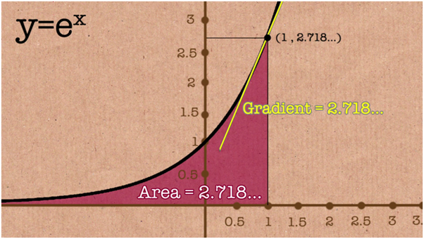
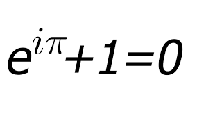
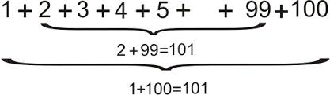
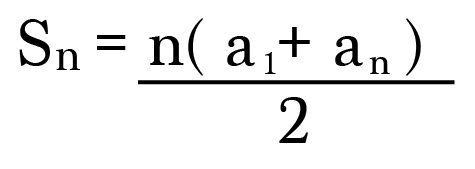
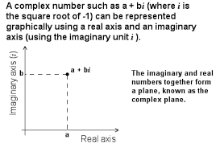

There are several brilliant mathematicians who have made a contribution, so let's talk about some iconic geniuses. We will be talking about four mathematicians, Leonhard Euler, Pierre de Fermat, Johann Carl Friedrich Gauss, and Alan Turing.

Euler was like the godfather of Math. There's a joke that states if you don't know who solved this problem, it's either Euler or Gauss. Euler found a property in this expression (1+1/n)n. The greater n was, the greater the result of the expression was. Now imagine if n was infinite. This would lead to a result of roughly 2.7182818 also known as “e”, the Euler constant. He also proved that “e” didn't terminate. But what are the uses of this weird constant “e”? If you were to graph it where the equation of the line was y=ex, you would be mind-blown by the properties. If you were to randomly place a point on the curve, the gradient would be ex. But that's not it. The area underneath the point to the x-axis and all the way down to negative infinity would be ex. This is the only function that has that property. Euler later than proved that eiπ+1=0 which is often voted as the most beautiful and famous equation of all time.
 

Pierre de Fermat was a jury in France born on 1607. He had a hobby when he came home which as you can probably guess, was Math. He would solve complex problems that were clearly out of anyone's league at the time. However, something revolutionary happened. One evening, Fermat was looking at a theorem similar to the Pythagorean theorem. It was in this format, xn+yn=zn where n was an integer greater than 2 and x, y, and z were all integers. He was stumped by this problem and couldn't find any possible solution. This really frustrated him and he believed so badly that there was no possible solution he began to prove why. Something to note would be that the Pythagorean theorem, the same problem as this, but n is equal to 2, has an infinite amount of solutions which satisfy the equation. But, there are an infinite amount of equations such as x³+y³=z³ which have no solution which is almost humorous in some ways. He then wrote in the margin of a book he was reading that day called “Arithmetica” by Diophantus. He wrote down “Hanc marginis exiguitas non caperet” which translates to “I have a marvelous proof, which this margin is too narrow to contain” from Latin. This is what made him special, the fact that he would solve the problem without giving any proof. He did this with nearly all of his problems saying, I have proof, but I have to wash my hair, take care of the cat, etc. Since there was no proof, this attracted the attention of other mathematicians and they looked further in depth into the problems “solved” by Fermat. This was when they realized Fermat was always right for every case he said, “I have a proof” and they managed to prove all of Fermat's problem except one. As you can predict, it was the xn+yn=zn problem. Since it was the last problem to be solved it was called Fermat's Last Theorem. Due to the fact that it was the last one, it was the most wonderful and astonishing. The more people that tried to solve it, the more they failed, making the theorem more spectacular. It took over a century to actually solve and find the missing proof. It was discovered by Abel Prize winner, Andrew Wiles (below). You can see how he solved this equation through here.

Johann Friedrich Carl Gauss is one of the greatest mathematicians of the last few hundred years. He was born on April 30, 1777, in Brunswick, Germany. He wasn't born into any rich family, but rather the bottom of the hierarchy, meaning his parents were poor. Something about him was that he was a mastermind at calculations. He taught us a new way to look at arithmetic. One formula we use is called the Gauss formula or sometimes referred to as the “trapezoid formula”. So let's have some story time. There's an urban myth that says Gauss was in his Math class and he had a very rude, strict teacher. The teacher wanted the students to be quiet so he gave his students a problem, to add all the numbers from one to one hundred. When Gauss received the question, he solved it in seconds while it took his classmates hours! His little method was to add the numbers in pairs as of below.
Then he realized that and created a formula that people use all over the world, so it looks like this.
Now that was just when Gauss was a child, roughly when he was age 15. As he got older, he started to show the entire world how to use complex numbers such as √-1. In the realm of mathematics before the existence of Gauss, they knew there were complex numbers but couldn't use them in real-life applications. But Gauss managed to introduce complex numbers into the real world with a graph (below). This was the start of a revolutionary movement.

The final mathematician we will talk about is a pure genius. If it weren't for him, you probably wouldn't be alive right now. His name was called Alan Turing, sound familiar? He was born on June 23, 1912, in London, England. He was born a few decades before World War 2 broke out. The Germans seemed to have devastating weapons that could conquer countries with ease. It was like they were one step ahead. The Enigma machine, which would decipher German codes, was used by the Germans to communicate to each other. So the Allies thought, we'll just encrypt their message. Essentially, if the Allies could break the code, they would win the war, if they didn't, they would lose. Thing is, there are 158,962,555,217,826,360,000 possible combinations! They would need a brilliant mind to stand up to protect a whole continent from the German's realm, and Alan Turing stood up. He invented a machine called the Bombe which managed to decrypt the code. You can see how the machine worked in depth through here. This led the Allies to gain additional knowledge causing them to win the war.
Go back to top